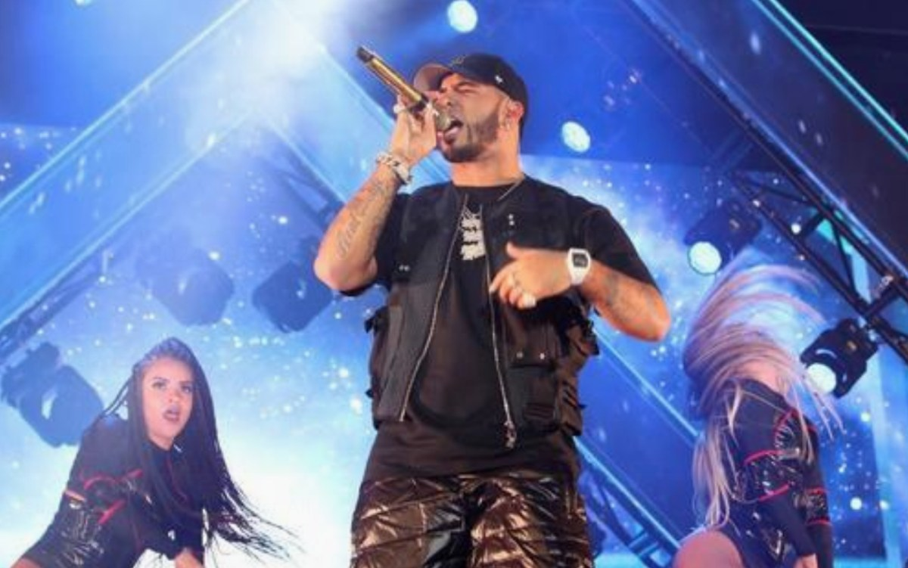

Biografía
Emmanuel Gazmey Santiago, conocido artísticamente como Anuel AA, nació el 26 de noviembre de 1992 en Carolina, Puerto Rico. Es hijo de José Gazmey, quien fue vicepresidente de Sony Music en Puerto Rico. Desde joven mostró interés por la música urbana, influenciado por artistas del reguetón y el trap latino.
Carrera Artística
Anuel comenzó su carrera musical en 2010 y se dio a conocer con temas que mezclaban trap y reguetón. En 2016 fue arrestado por posesión ilegal de armas, lo que lo llevó a cumplir una condena de 30 meses. Durante su tiempo en prisión, lanzó varios temas que se volvieron virales, consolidando su fama. Al salir en 2018, lanzó su álbum “Real Hasta la Muerte”, el cual fue un éxito mundial.
Vida Personal

Anuel AA tiene dos hijos: Pablo Anuel y Gianella. En su vida amorosa ha tenido relaciones con Karol G y Yailin La Más Viral. Actualmente mantiene un perfil más reservado sobre su vida sentimental, aunque sigue siendo una figura mediática muy seguida en redes sociales.
Discografía
- 2018: Real Hasta la Muerte
- 2020: Emmanuel
- 2021: Las Leyendas Nunca Mueren
- 2023: LLNM2
Cada álbum refleja su evolución musical, mostrando su estilo trap y su influencia en la música urbana latina.